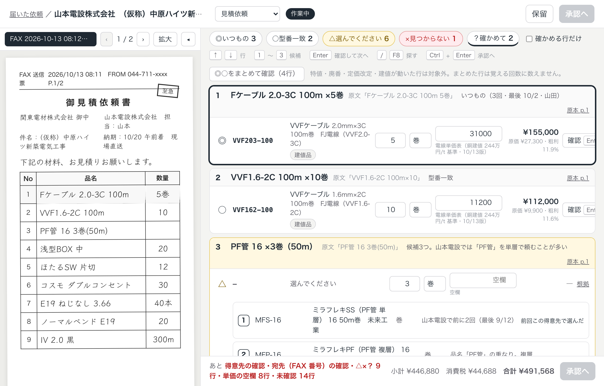
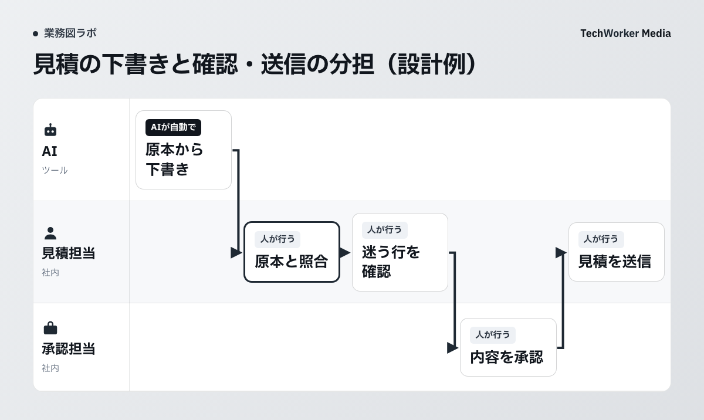

原本と明細を並べて確かめる行を残す
FAXの「PF管 16」だけでは、単層か複層かを決めきれない場合があります。AIが品番の候補を出した後も、担当者が確かめる仕事が残ります。
次はTechWorkerの「デンミツAI」が公開している見積の下書き画面です。会社名と数字は見本です。この記事では、この画面を手がかりに業務を分ける設計例を示します。

左のFAXと右の明細で、依頼の言い方と変換後の品番を見比べられます。「PF管 16」の行には候補が並び、選択を待っています。画面下には、得意先・宛先・単価などの未確認項目が残ります。
ここから読み取れるのは、下書きの作成後にも確認の工程を設けていることです。この見本画面から、読み取りの精度や時間の削減率は分かりません。
下書き・確認・承認・送信を業務図に分ける
AIが下書きを作り、担当者が原本と照合します。社内で承認を経て、担当者が取引先へ送る設計例です。

デンミツAIの公式サイトはAIの役目をFAXの字を読み、品目表から当てはまる行を探すところまでと説明しています。値段は得意先ごとの単価表を使い、表にない品は担当者へ回します。
この範囲を業務図にすると、最初に整えるものも見えてきます。読み取る原本、使ってよい品目表と単価表、迷う行を引き取る担当者です。社内の承認担当は自部署の決まりに合わせて割り当てます。
下書きが完成した時点で「送信済み」にしないことも、工程を分ける理由です。見積の内容を確定する仕事と、相手へ届ける仕事には、それぞれ完了の記録を残します。
品番・数量・単価の未確認を、人へ戻す条件にする
候補が出たことと、その候補を採用できることは別々に確かめます。次の表は自部署で試すための記入例です。実際の会社で運用された手順を示すものではありません。
| 確かめる項目 | 人へ戻す条件の記入例 | 引き取る人 |
|---|---|---|
| 品番 | 複数の候補が残る、品目表に該当品がない | 品目を判断できる見積担当 |
| 数量と単位 | 原本と明細の単位が異なり、換算の根拠がない | 原本と品目表を照合する担当 |
| 単価 | 使う単価表が未確定、該当する値段がない | 社内の価格決定ルールに従う担当 |
| 宛先と送付 | 送付先が不明、承認が済んでいない | 承認・送信を担う担当 |
単位の換算を追加で任せたい場合も、先に根拠を決めます。たとえば箱と個の換算には、対象品の入数が必要です。根拠がないまま過去の別の品から推測して埋める運用は避けます。
この表の停止条件は、TechWorkerが提案する設計例です。デンミツAIの全機能や、自動で検知できる項目の一覧ではありません。製品を選ぶ際は、実際の原本を使い、どの条件で止まるかを個別に確かめてください。
最初の試行では直した行と確認時間を残す
まず対象の営業所や担当を絞り、扱ってよい見積依頼を選びます。品目表・単価表の持ち出しや利用の許可も、試行前に確認します。
試行用の記録には原本の参照先、候補を採用した行、直した行、判断できず戻した行を残します。確認担当と送信まで進んだかも記録します。顧客名や単価が含まれる記録は社内で権限を決めて保管します。
確認にかかった時間は原本を開いてから下書きを確定するまで、など区間をそろえて測ります。待ち時間や取引先への確認が混ざった場合は、その時間を分けて書きます。AIの処理時間だけでは、担当者の仕事が減ったかを判断できません。
品目表にない品が多い、単価を決める人が不在、といった状態では、下書きの後で仕事が止まります。試行の結果を見て、品目表の整備や担当の割り当てから始める判断もできます。
出典と設計例の範囲
- デンミツAI公式サイト。公開見本画面、AIの役目、品目表・単価表、担当者による送信。2026年10月27日確認。
- AIに任せる業務の決め方。担当と実行の境界を考えるための、TechWorkerの公開済み業務図。
本記事は自社製品の公開画面を基にした設計例です。担当分担、停止条件、試行の記録項目はTechWorkerの提案です。実顧客の精度・削減時間・受注の効果を示す記事ではありません。